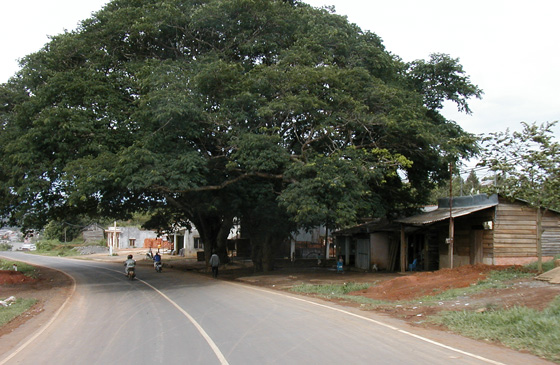

sent 9 June 2003

Viet Nam Trav-E-Logs©
| Da Lat
sent 9 June 2003 |
|
| back: Cu Chi Tunnels | Da Lat Flower |
================================= Been so busy traveling, I just don’t have time to write. Then when I start to write, we have power failures, traditional performance or social interruptions, etc. Tough life, isn't it? Hope you’re enjoying life as much as I am. =================================
May 17-19, 2003
 The road to Da Lat from Sai Gon is as good as all the other roads I’ve traveled in Viet Nam. Really, I expected much worse, such as Cambodia or Indonesia, but this is not the case. The infrastructure is developing very nicely, with road and bridge improvements the norm. It’s an exciting time for the construction industry. Everywhere you look, you can see half a dozen or more projects under way.
The evening before leaving Sai Gon, I purchase a chunk of jackfruit to share on the highway. At the lunch stop, I sit with other westerners, and prepare the fruit for eating. Most others have ordered meals, so only eat one or two sections each. I have seven or eight, for I don’t want to carry it further. The last section has a strange flavor, and I don’t finish it.
Upon arrival in Da Lat, I ask the driver to let me off at the Dreams Hotel, as Lonely Planet has it listed as the best value, offering free Internet and breakfast included with meals. It seems everyone follows suit. Chris and I decide to share a room again. After freshening up, we take a short walk around the hilly town, looking for a place to eat and taking in the local flavor. Chris is looking for a photo shop, and possibly some clothing. Suddenly, I’m not feeling too well, and I’m burping jackfruit flavor. I rush back to the hotel.
For the next 14 hours, I’m unable to be more than 30 minutes from a toilet. Then I pop 3 Imodium tablets, one every 12 hours. Altogether I spend about 36 hours in bed. The following morning, I decide it’s time to force myself back into normal behavior. We rent out mountain bikes (the real thing!) and set out for the minority group at Lat village. We want to climb Nui Lang Bian Mountain -- above the village. Our map of town is a crude sketch, not to scale, and shows only a few streets. We are going well beyond the map, on dirt roads and paths. I’m moving slowly, not sure if I will have to turn around. We find the village, pass through, only to find a paved road has been built to the top of the mountain! Just beyond the entrance gate (admission charge), we are told no bicycles allowed – only park vehicles, which are readily available. Chris and I lock up the bikes at the designated location, and start walking up the road. The guide in the first jeep that passes us motions for us to take the path leading to the side, not the main road. This suits us just fine. It is a beautiful path, leading first on the edge of farmed fields, then eventually into the woods, always upwards. I’m walking slower than ever before, and making frequent rest stops – a real sluggo in HPS terms. Although the scenery is not spectacular, it is never the less, a woods in the Central Highlands of Viet Nam. I’m feeling better. Still weak, but better. We keep seeing small craters in the soil, with ash and charcoal remains. It turns out the local villagers are making charcoal for sale in the surrounding towns and villages. Often the main path would seem to diverge in to a dozen or so of barely visible paths, and we would split up, exploring several until a clearly defined path could be found. After several hours, we know we have walked much further than the mountaintop was reported to be. Finally we find a young boy preparing to make charcoal, and we point up the mountain and call the name “Nui Lang Bian”. He points back to the way we came from, and arches his arm to the right. We turn around, and decide to always take any path to the right. At one point, we try leaving the path completely, moving uphill until the brush gets too thick to penetrate. Eventually we find ourselves on the same path we used to ascend, and it is certain the guide has deliberately lead us astray. We both agree – our walk in the woods was more rewarding than walking any paved road to the top of a small mountain!
Back at the Dreams Hotel, I take advantage of the free Internet offer and perform a lot of maintenance on my laptop, such as updating my virus definitions. But I’m unable to send and receive most of my email, as my ISP’s site seems to be down. In stead, I check out CNN for the first time, and do a quick review of the SARS situation. The Indonesian site still says nothing about a change in visa requirements.
I download all of Chris’s digital photos onto my laptop; we review them, and burn a CD for him. I’m not impressed with any of the tourist attractions he saw while I was sick, and decide to leave for Na Trang with him the next morning.
Bill
------------------------------"Travel is Fatal to Bigotry, Prejudice, and Narrow-minded ness" .... attributed to Mark Twain
| next: Nah Trang |
| back: Cu Chi Tunnels |